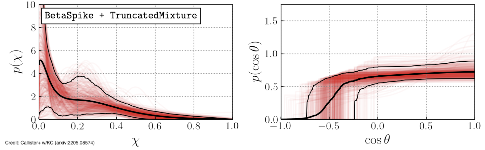
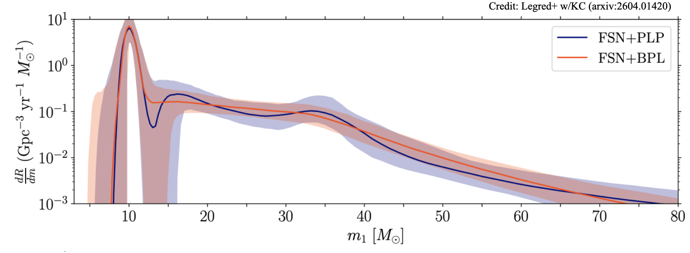

Populations of compact objects
Every gravitational-wave detection from the coalescence of two compact objects carries information about one specific binary: we measure the masses, spins, distance, perhaps tidal deformation, etc. A handful of systems with "exceptional" properties, such as the largest mass or most misaligned spin, might reveal a unique origin. But combining all these hundreds of detections together gives us more than the sum: a coherent picture of the ensemble properties of the population of compact objects in the universe, and clues about the astrophysical environments in which the binaries and their constituents formed and evolved. Despite their large uncertainties, different potential formation channels make different predictions. For example, binaries that formed as a pair of stars that evolved together are expected to have small, aligned spins and comparable masses. Binaries assembled in densely crowded clusters of stars might have misaligned spins. Binaries whose constituents formed via previous mergers might have large spins and unequal masses. By statistically analyzing the ensemble of detections, i.e., population inference, we pin down the properties of astrophysical black holes and neutron stars and compare them to predictions from population synthesis models.
This population inference requires models for the shape of the underlying distribution of properties. Parametric models take a specific functional form, such as a power law for the black hole mass or a normal distribution for the spin. These are straightforward to interpret, but the chosen functional forms almost certainly do not describe the real world. Nonparametric models (truly, a misnomer!) instead allow for flexible shapes and can reveal unexpected features, but are harder to interpret physically and sometimes hide opaque assumptions. We are working on developing more complete models, such as parametric models that target specific features of interest, as well as tools to test how the chosen models impact astrophysical conclusions.

The spin of black holes is especially informative for their origin. Researcher Tom Callister and then-Caltech graduate student Simona Miller led a study that tackled two key questions: Are most black holes completely non-spinning, and do we see pairs where the spins oppose the orbital motion? We found that most black holes do spin, even if slowly, and that some binaries do have spins pointing opposite to their orbit. These findings help us understand how black holes form - whether they come from the collapse of individual stars or from chaotic interactions in crowded stellar environments like globular clusters. Our study further highlights the technical challenges inherent to population inference: how can we combine hundreds of largely uninformative detections (as spin measurements are weak) to probe something of measure zero (namely that the spin is exactly zero)? The answer is: very carefully!

Another example of searching for a specific feature predicted by theoretical formation channels and building a model to identify it comes from the mass distribution of black holes. The masses and spins of the black holes we observe depend both on the details of supernova physics that gives birth to individual black holes and on how a binary of two black holes forms and evolves in an astrophysical environment. Some supernova simulations predict that a star's "explodability," i.e., whether it explodes leaving behind a neutron star or collapses directly into a black hole, is not a simple function of its mass. This produces an overabundance of black holes near 10 solar masses, which is also, intriguingly, where the mass distribution of our detections peaks. If the peak comes from such a distinct channel, there could be a "gap" before the rest of the population picks up at higher masses. Then-Caltech graduate students Isaac Legred and Jacob Golomb led a study that searched for such a gap. Explicitly allowing for a gap in the parametric model, we found that the data support its presence, i.e., the rate of mergers is consistent with zero between roughly 12 and 16 solar masses, though the evidence is not yet definitive. Adding to the case, black holes below the putative gap appear to have lower spins than those above. This work is part of a broader effort to identify subpopulations of compact objects that trace specific formation channels through their unique features.